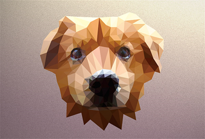
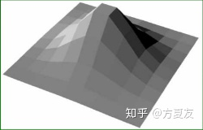
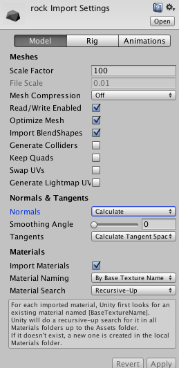
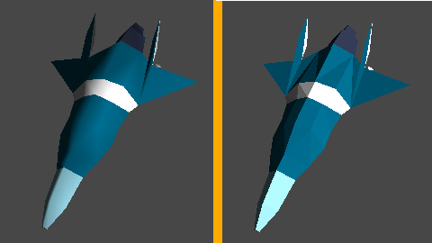

该篇探究的是让一些普通3D模型呈现出lowpoly风格的一些方法（主要是shader）。
low poly（低多边形）风格，Poly是Polygon的简称，Low poly风格其实是一种复古风格，在早期的不支持插值渲染的年代，这种风格随处可见，因为模型简单、渲染也不复杂，在早期游戏中被大量使用。

随着时间的推进，计算机性能和技术得到了不断的提升。low poly风格已经从节省运算空间的一种手段变成了一个艺术风格，在如今技术进步了很多的时代，还是有很多游戏选择使用lowpoly风格来做游戏。
本学期游戏开发课程中，本小组也是打算运用lowpoly风格制作本组游戏。
但是由于时间和能力的限制，我们大程里的模型并不是都是由我们自己建模得来的，在网上找相应的资源是肯定会经历的过程。但是有些时候我们并不能找到一些需要的lowpoly风格的资源，只能找到普通风格的资源。这时候如果有相应风格的shader的话，会大大节省美工找资源的一个时间。这也是我探究unity中low poly shader实现方法的原因。
原理
首先，介绍下lowpoly。
Low poly风格的渲染也被称为flat shading（平面着色）。flat shading中，根据每个三角形的法线计算着色效果。着色计算只执行一次，整个三角形都采用计算结果的颜色，这样就导致相邻两个三角形的法向量差别很大，所以就能看到明显的三角形的边。

效果展示
先上效果展示再放原理。


实现方式
我们通过Geometry Shader来实现lowpoly风格的场景。
这种方法的原理就是在光栅化前、在Geometry Shader里给每个顶点增加一个属性，面法线faceNormal。由于Geometry Shader中可以知道同一个三角面片中的所有三个顶点的信息，因此我们可以为它们计算一个相同的面法线值。这样，即便在经过光栅化插值后，同一个三角面片中的面法线也是一样的。关键代码如下：
1 | [] |
但是由于该方法通过Geometry Shader实现，要求使用GPU，因此有些大材小用，移动端游戏上也不能实现此效果。
一些限制
这个shader的限制也很明显，就是最后lowpoly化后的效果和原模型的面片数量会进行一个直接的挂钩。
比如图上这个鸭子模型，虽然我们对它使用了shader，它也成功地lowpoly化了，但是由于模型本身的面数很高，lowpoly化后还是拥有比较多的面和细节，这对于lowpoly来说是不合格的。同时因为geometry shader是SM4.0的技术，所以手机上可能无法达到相应的效果。

其他得到LowPoly风格的方法
Unity内部直接进行软硬边转换
在Unity中，Unity是可以直接帮我们做到软硬边的转换的。它的原理其实就是重新拆点、重新计算点法线。

在我们导入一个模型后，可以在模型的导入面板中的Normals & Tangents块中，把Normals设置成Calculate模式、把Smoothing Angle设置成0就可以得到硬边的效果。把所有相连的边在建模软件中设置成硬边（Hard Edge）后，软件就会进行拆顶点的工作，每个三角形有各自属于自己的三个顶点，不与他人共用，这三个顶点的点法线计算不会受毗连三角形的影响，而仅仅是由该三角面片的面法线决定。
这样的模型可以直接使用任何普通的Shader进行渲染，就会得到flat shading的效果。但这种方式会增加顶点的数目。

程序产生的网格
以下代码可以把任何模型强制转化成没有共用顶点的模型。以此再计算顶点法线，就可以得到lowpoly的效果
1 | Vector3[] oldVerts = mesh.vertices; |